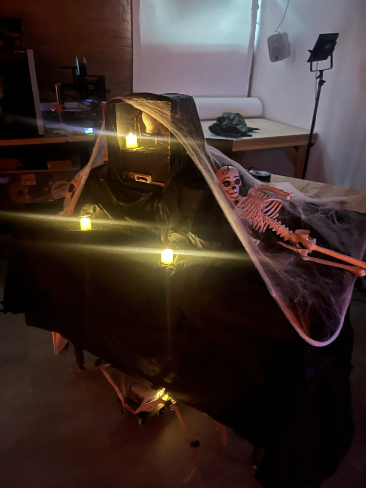
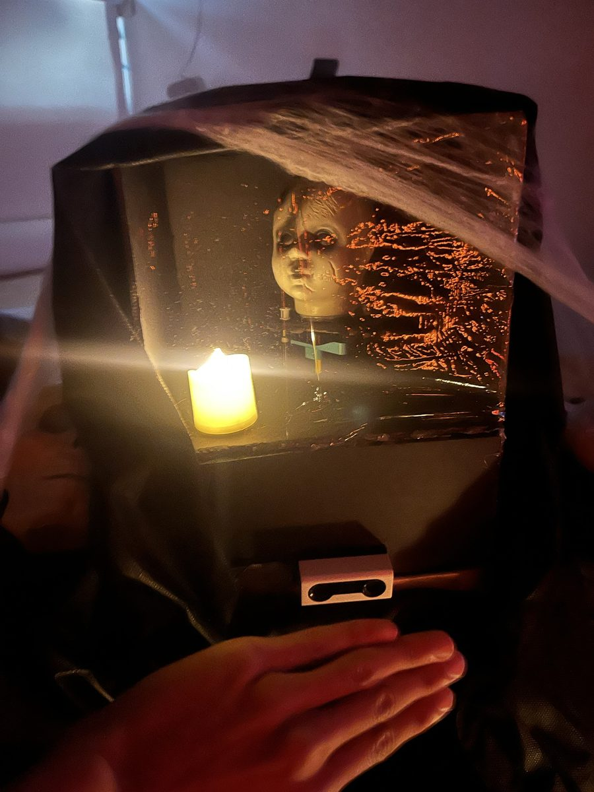

Project Portfolio

Project 10: Haunted House
For Project 10, our group designed and built an exhibit for the EN1 Haunted House at the Nolop Makerspace on October 30. The exhibit featured a crying baby that became louder as visitors approached. One distance sensor controlled the crying audio on a laptop, a motor that turned the baby’s head, and a separate robot car that moved forward as the sound grew louder.
The project builds on the hub-to-hub messaging I explored in Activity 6.
We placed the baby’s head inside a dark box behind a clear panel, with the distance sensor mounted at the front below it. Black cloth, fake cobwebs, skulls, and candles decorated the exhibit, and we dressed the robot car as a giant spider.
Hardware setup
- Sender hub: The distance sensor was connected to port A and the head motor to port E. A USB cable connected this hub to a Windows laptop.
- Receiver hub: This hub controlled the car’s drive motors on ports B and F. It ran on battery power without a USB cable so the car could move independently. The wheels were about 2 inches across.
- Laptop: The
baby_player.pyscript used pyserial to communicate with the sender hub and pygame to play thebaby.wavrecording.



How it worked
The system used one volume value, from 40% to 100%, calculated by the sender hub from the distance sensor. The same value controlled the laptop audio, the baby’s head, and the car.
Sender hub. Nearby objects raised the volume: it reached 100% at 150 mm or closer, then scaled down to 40% at 1,400 mm. Distances beyond 1,400 mm and missing sensor readings were treated as no object, giving the minimum volume. To reduce noisy readings, the sender used the median of its latest five measurements and ignored distance changes smaller than 30 mm. It smoothed changes by moving 30% toward the target volume per loop, running about every 50 ms. If readings disappeared, it waited 400 ms before treating the sensor as lost.
The sender printed VOLUME: messages over USB for the laptop, broadcast the value wirelessly through spikecomm’s Beacon for the car, and moved the motor on port E to match the volume. The head angle ranged from 180 degrees at 40% to 360 degrees at 100%. The sender code was saved on the hub as the baby_sender library, which the laptop script started.
Laptop. When started, baby_player.py listed the available USB ports and asked which one belonged to the sender hub. It stopped the hub’s current program, started baby_sender, and looped baby.wav while adjusting playback volume for each incoming VOLUME: message. If no message arrived for more than one second, it muted the audio. Pressing Ctrl+C stopped the audio and the hub program.
Receiver hub (car). The car listened for values with spikecomm’s Scanner. Its Scanner tag had to match the sender’s Beacon tag. The car ran its own saved program and moved to a target position along its track based on the received volume. We calibrated 1,300 degrees of wheel rotation to about two feet of travel: 50% corresponds to halfway along the track, and 100% to the far end. Since the minimum volume is 40%, the car normally stays at least 40% of the way along the track. It moved forward as the value rose and backward as it fell, targeting fixed positions rather than adding movement with every message.
The car’s wheel encoders were zeroed when its program started, so it needed to be placed at the starting end before running the program. If it stopped receiving messages for more than one second, it stopped its motors.
Code
Sender hub (baby_sender)
from hub import port
import distance_sensor
import motor
import time
from spikecomm import Beacon
beacon = Beacon("!Z", verbose=False)
NEAR_MM = 150
FAR_MM = 1400
MIN_VOLUME = 40
MAX_VOLUME = 100
SMOOTHING = 0.3
DEADBAND_MM = 30
LOST_DELAY_MS = 400
readings = []
filtered_distance = None
last_valid_time = None
current_volume = float(MIN_VOLUME)
last_angle = None
try:
while True:
now = time.ticks_ms()
try:
distance = distance_sensor.distance(port.A)
except OSError:
distance = -1
if 0 < distance <= FAR_MM:
# Clear old samples after a gap.
if (
last_valid_time is None
or time.ticks_diff(now, last_valid_time)
> LOST_DELAY_MS
):
readings = []
filtered_distance = None
last_valid_time = now
readings.append(distance)
if len(readings) > 5:
readings.pop(0)
# Reject brief sensor spikes.
if len(readings) == 5:
median_distance = sorted(readings)[2]
if (
filtered_distance is None
or abs(median_distance - filtered_distance)
>= DEADBAND_MM
):
filtered_distance = median_distance
lost = (
last_valid_time is None
or time.ticks_diff(now, last_valid_time)
> LOST_DELAY_MS
)
if lost:
readings = []
filtered_distance = None
# Stay at 40% when nothing is detected.
if filtered_distance is None:
target_volume = MIN_VOLUME
else:
closeness = max(
0.0,
min(
1.0,
(FAR_MM - filtered_distance)
/ (FAR_MM - NEAR_MM)
)
)
target_volume = MIN_VOLUME + (
MAX_VOLUME - MIN_VOLUME
) * closeness
# Smooth volume changes.
current_volume += (
target_volume - current_volume
) * SMOOTHING
volume = max(
MIN_VOLUME,
min(MAX_VOLUME, int(current_volume + 0.5))
)
# Motor E follows the same volume.
# 40% = 180 degrees; 100% = 360 degrees.
angle = 180+(volume-40) * 180 // 60
if angle != last_angle:
motor.run_to_absolute_position(
port.E,
angle,
360,
stop=motor.HOLD
)
last_angle = angle
# Wireless message to the receiver car.
beacon.broadcast(volume)
# USB message to the laptop.
print("VOLUME:", volume)
time.sleep_ms(50)
finally:
motor.stop(port.E)Receiver hub (car)
from hub import port
import motor
import time
from spikecomm import Scanner
scanner = Scanner("!Z", verbose=False)
TRAVEL_DEGREES = 1300
DRIVE_SPEED = 300
B_FORWARD = 1
F_FORWARD = -1
volume = 0
last_message = None
commanded_position = None
# The starting location becomes the zero endpoint.
motor.reset_relative_position(port.B, 0)
motor.reset_relative_position(port.F, 0)
def receive_volume(values):
global volume, last_message
if len(values) > 0:
volume = max(0, min(100, int(values[0])))
last_message = time.ticks_ms()
scanner.listen(receive_volume)
def move_car(position):
motor.run_to_relative_position(
port.B,
B_FORWARD * position,
DRIVE_SPEED,
stop=motor.HOLD
)
motor.run_to_relative_position(
port.F,
F_FORWARD * position,
DRIVE_SPEED,
stop=motor.HOLD
)
try:
while True:
disconnected = (
last_message is None
or time.ticks_diff(
time.ticks_ms(), last_message
) > 1000
)
if disconnected:
if commanded_position is not None:
motor.stop(port.B, stop=motor.HOLD)
motor.stop(port.F, stop=motor.HOLD)
commanded_position = None
else:
# 0% = starting endpoint.
# 50% = halfway.
# 100% = far endpoint.
target_position = (
TRAVEL_DEGREES * volume + 50
) // 100
if target_position != commanded_position:
move_car(target_position)
commanded_position = target_position
print("VOLUME:", volume)
time.sleep_ms(50)
finally:
motor.stop(port.B)
motor.stop(port.F)Laptop (baby_player.py)
from pathlib import Path
import re
import time
import pygame
import serial
from serial.tools import list_ports
def main():
audio_file = Path(__file__).with_name("baby.wav")
if not audio_file.exists():
raise SystemExit(
"Missing baby.wav. Put it in the same folder "
"as baby_player.py."
)
print("Available ports:")
for device in list_ports.comports():
print(f" {device.device}: {device.description}")
usb_port = input(
"\nEnter the SENDER hub's port, such as COM3: "
).strip()
pygame.mixer.init()
try:
pygame.mixer.music.load(str(audio_file))
pygame.mixer.music.set_volume(0)
with serial.Serial(
usb_port,
baudrate=115200,
timeout=0.1,
write_timeout=2
) as hub:
# Stop any old program and enter the Python prompt.
hub.write(b"\x03\x03\x02")
time.sleep(0.5)
hub.reset_input_buffer()
# Start the sender library saved through CodeRobots.
hub.write(
b"import sys; "
b"sys.path.insert(0, '/flash/lib'); "
b"sys.modules.pop('baby_sender', None); "
b"import baby_sender\r\n"
)
pygame.mixer.music.play(loops=-1)
last_message = time.monotonic()
last_volume = None
connection_lost = False
print("\nRunning with the SENDER connected by USB.")
print("Press Ctrl+C to stop.\n")
try:
while True:
line = hub.readline().decode(
errors="replace"
).strip()
match = re.fullmatch(
r"VOLUME:\s*(\d+)", line
)
if match:
volume = max(
0, min(100, int(match.group(1)))
)
pygame.mixer.music.set_volume(
volume / 100
)
last_message = time.monotonic()
connection_lost = False
if volume != last_volume:
angle = 180 + (volume - 40) * 180 // 60
print(
f"Volume: {volume}% | "
f"Motor E target: {angle} degrees"
)
last_volume = volume
elif line:
print("Sender:", line)
# Mute if sender messages stop arriving.
if time.monotonic() - last_message > 1:
pygame.mixer.music.set_volume(0)
if not connection_lost:
print("No sender messages — muted.")
connection_lost = True
last_volume = None
finally:
pygame.mixer.music.stop()
hub.write(b"\x03")
time.sleep(0.2)
finally:
pygame.mixer.quit()
if __name__ == "__main__":
try:
main()
except KeyboardInterrupt:
print("\nStopped.")
except (serial.SerialException, pygame.error) as error:
print("\nError:", error)How the design changed
We began with a basic distance threshold that switched a motor on or off, similar to the approach in Activity 6. We then developed the system so the sound, head, and car all followed the same volume value.
Our first car version also used thresholds: it moved one way above 80% volume and the other way below 60%. We changed this to position-based movement so the car’s location on the track corresponded to the volume instead of responding only at two cutoffs.
After seeing the raw distance readings fluctuate, we added filtering and smoothing to the sender.
Troubleshooting
- spikecomm on both hubs: Each hub needed its own copy of the spikecomm library.
- Hub code and laptop code: We had to keep track of which program ran on each hub and which ran as regular Python on the laptop.
- USB connection conflict: CodeRobots needed to release the sender hub before
baby_player.pycould connect to it. Otherwise, the laptop script could not communicate with the hub. - Unexpected receiver values: The car sometimes received values we did not expect. We thought nearby hubs using the same tag might have been involved. Changing the tag was suggested, but we have not confirmed whether that was the cause or whether changing it fixes the issue.
Limitations and what remains to check
- The sound, head, and car needed troubleshooting to coordinate, and their combined final behavior still needs to be tested together.
- The car depends on starting from a known position. If it is not placed at the starting end before the program runs, its later target positions will be inaccurate.
- The sender hub must stay connected to the laptop by USB for the sound system to work, so the baby setup itself is not wireless.
- The wireless messages are not private. Another hub using the same tag could interfere with the car.